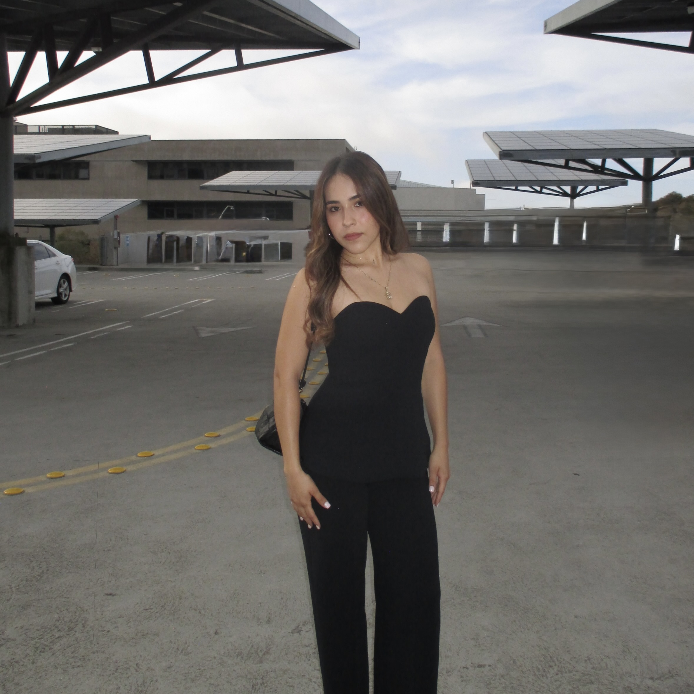

About Me

Education
I'm pursuing a B.S. in Computer Engineering at UC San Diego's Jacobs School of Engineering, with a minor in Economics.
Relevant Coursework
- ECE 45 — Circuits and Systems
- ECE 65 — Components and Circuits Laboratory
- ECE 101 — Linear Systems Fundamentals
- ECE 108 — Digital Circuits
- ECE 111 — Advanced Digital Design Project
- ECE 171A — Linear Control System Theory
- ECE 196 — Engineering Hands-on Group Project
- CSE 100 — Advanced Data Structures
- CSE 142 — Computer Architecture, Software Perspective
Technical Skills
Languages: C/C++, MATLAB, Python, Java, SystemVerilog
Microcontrollers & Hardware: ESP32, Arduino, Raspberry Pi, STM32L475
Software & Design Tools: LVGL, SquareLine Studio, Git, GitHub, SolidWorks, KiCad, Cadence Virtuoso, LTspice
Career Interests
Through my coursework and projects, I've discovered that I'm most interested in control systems and embedded systems, especially the connection between hardware and software. I hope to pursue a career in embedded firmware or controls engineering, where I can keep contributing to innovation in these fields.